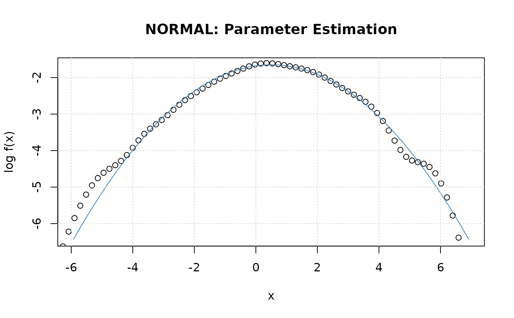

Parameter Fit of a Distribution
dist-DistributionFits.RdA collection and description of moment and maximum
likelihood estimators to fit the parameters of a
distribution.
The functions are:
nFit | MLE parameter fit for a normal distribution, |
tFit | MLE parameter fit for a Student t-distribution, |
stableFit | MLE and Quantile Method stable parameter fit. |
Usage
nFit(x, doplot = TRUE, span = "auto", title = NULL, description = NULL, ...)
tFit(x, df = 4, doplot = TRUE, span = "auto", trace = FALSE, title = NULL,
description = NULL, ...)
stableFit(x, alpha = 1.75, beta = 0, gamma = 1, delta = 0,
type = c("q", "mle"), doplot = TRUE, control = list(),
trace = FALSE, title = NULL, description = NULL)
# S4 method for fDISTFIT
show(object)Arguments
- control
[stableFit] -
a list of control parameters, see functionnlminb.- alpha, beta, gamma, delta
[stable] -
The parameters arealpha,beta,gamma, anddelta:
value of the index parameteralphawithalpha = (0,2]; skewness parameterbeta, in the range [-1, 1]; scale parametergamma; and shift parameterdelta.- description
a character string which allows for a brief description.
- df
the number of degrees of freedom for the Student distribution,
df > 2, maybe non-integer. By default a value of 4 is assumed.- object
[show] -
an S4 class object as returned from the fitting functions.- doplot
a logical flag. Should a plot be displayed?
- span
x-coordinates for the plot, by default 100 values automatically selected and ranging between the 0.001, and 0.999 quantiles. Alternatively, you can specify the range by an expression like
span=seq(min, max, times = n), where,minandmaxare the left and right endpoints of the range, andngives the number of the intermediate points.- title
a character string which allows for a project title.
- trace
a logical flag. Should the parameter estimation process be traced?
- type
a character string which allows to select the method for parameter estimation:
"mle", the maximum log likelihood approach, or"qm", McCulloch's quantile method.- x
a numeric vector.
- ...
parameters to be parsed.
Value
The functions tFit, hypFit and nigFit return
a list with the following components:
- estimate
the point at which the maximum value of the log liklihood function is obtained.
- minimum
the value of the estimated maximum, i.e. the value of the log liklihood function.
- code
an integer indicating why the optimization process terminated.
- gradient
the gradient at the estimated maximum.
Remark: The parameter estimation for the stable distribution via the maximum Log-Likelihood approach may take a quite long time.
Details
Stable Parameter Estimation:
Estimation techniques based on the quantiles of an empirical sample
were first suggested by Fama and Roll [1971]. However their technique
was limited to symmetric distributions and suffered from a small
asymptotic bias. McCulloch [1986] developed a technique that uses
five quantiles from a sample to estimate alpha and beta
without asymptotic bias. Unfortunately, the estimators provided by
McCulloch have restriction alpha>0.6.
Examples
## nFit -
# Simulate random normal variates N(0.5, 2.0):
set.seed(1953)
s = rnorm(n = 1000, 0.5, 2)
## nigFit -
# Fit Parameters:
nFit(s, doplot = TRUE)

#>
#> Title:
#> Normal Parameter Estimation
#>
#> Call:
#> nFit(x = s, doplot = TRUE)
#>
#> Model:
#> Normal Distribution
#>
#> Estimated Parameter(s):
#> mean sd
#> 0.4952318 2.0767958
#>
#> Description:
#> Mon Aug 8 08:09:34 2022 by user: georgi
#>